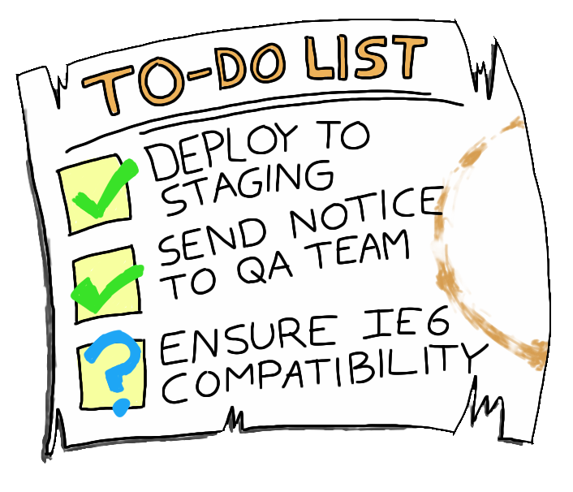
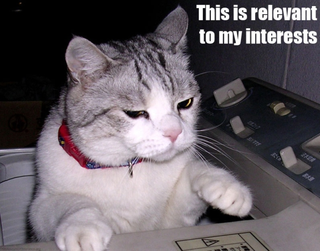
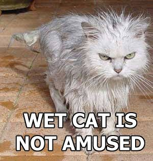
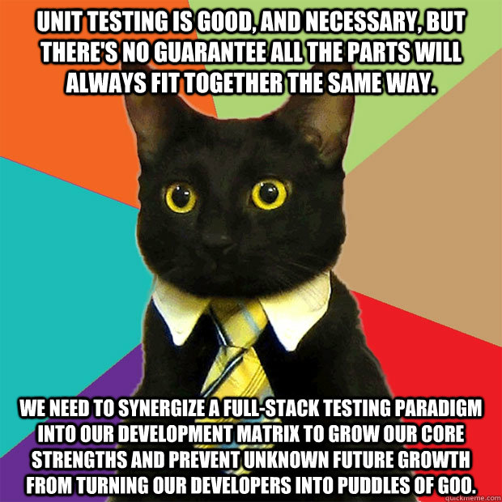
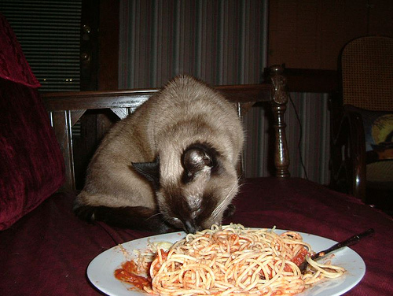
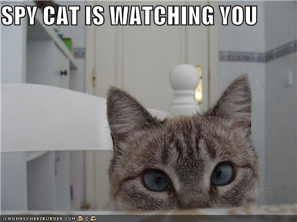

Automated testing is important
Why is it important?

Fortunately, we're beyond that nowadays
require 'spec_helper'
describe MyCoolWebsite do
let(:website) { described_class.new }
describe '#cool_method' do
subject { website.cool_method }
let(:oh_yeah) { [ double_cool ] }
let(:double_cool) { 'double cool' }
before do
website.stubs(:whoa_cool).returns(oh_yeah)
end
it { should == double_cool }
end
end
But there's more to web apps than Ruby nowadays...
<img src="normal.gif"
onmouseover="this.src='hover.gif'"
onmouseout="this.src='normal.gif'" />
<script type="text/javascript">
function showMyCoolTitle(title, length) {
if (length == null) { length = 0; }
if (length <= title.length) {
document.title = title.substr(0, length);
length++;
setTimeout(function() { showMyCoolTitle(title, length); }, 75);
}
}
window.onload = function() {
showMyCoolTitle("My cool website! Whoaaaaa!");
}
</script>
jQuery
Backbone
Sprockets and RequireJS
Automated testing is important
require 'spec_helper'
describe MyCoolWebsite do
let(:website) { described_class.new }
describe '#cool_method' do
subject { website.cool_method }
let(:oh_yeah) { [ double_cool ] }
let(:double_cool) { 'double cool' }
before do
website.stubs(:whoa_cool).returns(oh_yeah)
end
it { should == double_cool }
end
end
describe 'MyCoolWebsiteView', ->
website = null
beforeEach ->
website = new MyCoolWebsiteView()
describe '#coolMethod', ->
doubleCool = 'double cool'
ohYeah = [ doubleCool ]
beforeEach ->
website.whoaCool = -> ohYeah
it 'should be double cool', ->
expect(website.coolMethod()).toEqual(doubleCool)
Jasmine
BDD unit testing framework for JavaScript
Platform independent
Easily extended
Very easy to learn!
Follow along!
No need to install anything right now
Specs on the left
Code under test on the right
Write code in CoffeeScript
Ready?
Let's go!
describe
Describes a thing or a behavior of a thing
Let's describe...

describe 'Cat', ->
# cat behavior descriptions go here
Something that cats do...
describe 'Cat', ->
describe '#meow', ->
# description of the meow behavior goes here
John behavior #1
Use Ruby-style indicators for instance- and class-level methods, even in Jasmine
describe 'John', ->
describe 'spec definitions', ->
it 'should look like you did it in RSpec', ->
Describe how we expect a cat to meow
it
describe 'Cat', ->
describe '#meow', ->
it 'should meow correctly', ->
# expectation of a cat meowing
We have the description...
Now let's add the expectations!
expect
What should we get as an output?
describe 'Cat', ->
describe '#meow', ->
it 'should meow correctly', ->
expect(cat.meow()).toEqual('meow')
Wait, we need a cat.
describe 'Cat', ->
describe '#meow', ->
it 'should meow correctly', ->
cat = new Cat()
expect(cat.meow()).toEqual('meow')
# code-under-test
class this.Cat
meow: ->
// safety wrapper to prevent global pollution
(function() {
// ...but we want to pollute the Cat class
this.Cat = (function() {
function Cat() {}
Cat.prototype.meow = function() {};
return Cat;
})();
})(this) // this is window in a browser
Run it!
1 spec, 1 failure
Expected undefined to equal 'meow'.
Make it meow!
class this.Cat
meow: -> "meow"
1 spec, 0 failures
Here's what you should have meow...
# spec
describe 'Cat', ->
describe '#meow', ->
it 'should meow correctly', ->
expect(cat.meow()).toEqual('meow')
# code-under-test
class this.Cat
meow: -> "meow"
What if the cat meows differently based on certain states?
Nested describe
describe 'Cat', ->
describe '#meow', ->
describe 'hungry', ->
# Cat#meow expectation for when
# the cat is hungry
describe 'going to the vet', ->
# Cat#meow expectation for when
# the cat knows it's vet time
describe 'Cat', ->
describe '#meow', ->
describe 'hungry', ->
it 'should be a mournful meow', ->
cat = new Cat()
cat.state = -> Cat.HUNGRY
# ...just like cat.stubs(:state)
expect(cat.meow()).toEqual("meeeyaow")
describe 'going to the vet', ->
it 'should be an evil meow', ->
cat = new Cat()
cat.state = -> Cat.VET_PSYCHIC
# ...just like the one above
expect(cat.meow()).toEqual("raowwww")

cat = new Cat()
before do
@cat = Cat.new
end
it 'should be a mournful meow' do
@cat.stubs(:state).returns(Cat::HUNGRY)
@cat.meow.should == "meeyaow"
end
before -> it -> after
before do
@instance_variable = "yes"
end
it "is in same context as before block" do
@instance_variable.should == "yes"
end
beforeEach -> it -> afterEach
beforeEach ->
@instanceVariable = "yes"
it "should be in the same context", ->
expect(@instanceVariable).toEqual("yes")
describe 'Cat', ->
describe '#meow', ->
beforeEach ->
@cat = new Cat()
describe 'hungry', ->
it 'should be a mournful meow', ->
@cat.state = -> Cat.HUNGRY
expect(@cat.meow()).toEqual("meeeyaow")
describe 'going to the vet', ->
it 'should be an evil meow', ->
@cat.state = -> Cat.VET_PSYCHIC
expect(@cat.meow()).toEqual("raowwww")
A little semantics game...
describe 'Cat', ->
describe '#meow', ->
describe 'hungry', ->
# cat codes
describe 'going to the vet', ->
# moar cat codes
This works, but it can be clearer
describe Cat do
describe '#meow' do
describe 'hungry' do
# cat codes
end
describe 'going to the vet' do
# moar cat codes
end
end
end
context
Description of different states for a test
alias :context :describe
describe Cat do
let(:cat) { described_class.new }
# save describe for things or behaviors...
describe '#meow' do
subject { cat.meow }
# use context to describe states
context 'hungry' do
# cat codes
end
context 'going to the vet' do
# moar cat codes
end
end
end
Jasmine doesn't have context
However...
this.context = this.describe
this.context = this.describe
describe 'Cat', ->
describe '#meow', ->
context 'hungry', ->
# cat codes
context 'going to the vet', ->
# moar cat codes
this.context = this.describe
describe 'Cat', ->
describe '#meow', ->
beforeEach ->
@cat = new Cat()
context 'hungry', ->
it 'should be a mournful meow', ->
@cat.state = -> Cat.HUNGRY
expect(@cat.meow()).toEqual("meeeyaow")
context 'going to the vet', ->
it 'should be an evil meow', ->
@cat.state = -> Cat.VET_PSYCHIC
expect(@cat.meow()).toEqual("raowwww")
class this.Cat
@HUNGRY = 'hungry'
@VET_PSYCHIC = 'vet psychic'
meow: ->
switch this.state()
when Cat.HUNGRY
"meeeyaow"
when Cat.VET_PSYCHIC
"raowwww"
2 spec, 0 failures
Matchers
cat.meow.should == "meow"
cat.should be_a_kind_of(Cat)
cat.should_not be_hungry
# => cat.hungry?.should == false
expect(cat.meow()).toEqual("meow")
expect(cat.prototype).toEqual(Cat.prototype)
expect(cat.isHungry()).not.toBeTruthy()
Lots of built in matchers
toEqual(object)
toBeTruthy()
toBeFalsy()
toBeGreaterThan()
toBeLessThan()
toBeUndefined()
toContain()
toMatch()
expect(cat.isHungry()).not.toBeTruthy()
Create your own matchers!
MyMatchers =
toBeHungry: ->
return @actual.isHungry() == true
beforeEach ->
this.addMatchers(MyMatchers)
describe 'Cat', ->
beforeEach ->
@cat = new Cat()
it 'should not be hungry', ->
expect(@cat).not.toBeHungry()
describe
it
expect
toSomething()
beforeEach
afterEach
Jasmine == unit testing

No, this isn't a talk about integration testing
Testing the right things in your JavaScript unit tests

John behavior #2
Mock, stub, and spy on anything that should be handled in an integration test
describe 'John', ->
describe 'spec definitions', ->
it 'should keep unit tests as focused as possible', ->
Feature: Cat Behaviors
Scenario: Hungry cats meow a particular way
Given I have a cat
And the cat is hungry
When the cat meows
Then the meow should sound like "meeyaow"
class this.Cat
@FOOD_THRESHOLD = 20
@HUNGRY = 'hungry'
constructor: (@foodLevel = 30) ->
meow: ->
switch this.state()
when Cat.HUNGRY
"meeyaow"
state: ->
if @foodLevel < Cat.FOOD_THRESHOLD
Cat.HUNGRY
describe 'Cat', ->
describe '#meow', ->
context 'hungry', ->
it 'should be a mournful meow', ->
cat = new Cat()
cat.foodLevel = 15
expect(cat.meow()).toEqual("meeeyaow")
A perfectly cromulent test
class this.Cat
meow: ->
switch this.state() # <= dependent code executed
when Cat.HUNGRY
"meeyaow"
Why make your unit tests fragile?
cat.foodLevel = 15
# do we care about food level in this test?
# all we care about is that the cat is hungry
describe 'Cat', ->
describe '#meow', ->
describe 'hungry', ->
it 'should be a mournful meow', ->
cat = new Cat()
cat.state = -> Cat.HUNGRY
# ^^^ we don't care how state works,
# we just want a hungry cat
expect(cat.meow()).toEqual("meeeyaow")
Instance Stubs in JavaScript
Just replace the method on the instance
class this.Cat
state: ->
# cat codes
cat = new Cat()
cat.state = -> "whatever"
Stubs just return something when called
Mocks expect to be called
Test fails if all mocks are not called
Jasmine blurs the line a little

Spies work like mocks, but with additional abilities
class this.Cat
vocalProcessor: (speech) =>
if this.isAirborne()
this.modifyForAirborne(speech)
else
this.modifyForGround(speech)
describe 'Cat#vocalProcessor', ->
speech = "speech"
beforeEach ->
@cat = new Cat()
context 'airborne', ->
beforeEach ->
spyOn(@cat, 'modifyForAirborne')
@cat.isAirborne = -> true
it 'should be modified for flight', ->
@cat.vocalProcessor(speech)
expect(@cat.modifyForAirborne).toHaveBeenCalledWith(speech)
spyOn replaces a method on an instance with a spy method
spyOn(@cat, 'modifyForAirborne')
Can return a value, run code, run the original code, or just wait to be called
Two basic ways to make sure a spy is called
toHaveBeenCalledWith(args...)
Called least once with the given parameters
expect(@cat.modifyForAirborne).toHaveBeenCalledWith(speech)
toHaveBeenCalled()
Just called, no parameter check
expect(@cat.modifyForAirborne).toHaveBeenCalled()
Instance Mocks/Spies in JavaScript
Use spyOn/toHaveBeenCalled matchers
class this.Cat
state: ->
# cat codes
cat = new Cat()
spyOn(cat, 'state')
expect(cat.state).toHaveBeenCalled()
spyOn works great with class-level stubs and mocks, too
class this.Cat
@generateFurColor: (base) ->
# magicks to make a fur color given a base
regrowFur: (damagedHairs) ->
for follicle in damagedHairs
follicle.regrow(Cat.generateFurColor(this.baseColor))
Cat.generateFurColor = ->
"whoops i nuked this method for every other test"
describe 'Cat#regrowFur', ->
color = 'color'
beforeEach ->
@cat = new Cat()
@follicle =
regrow: ->
@follicles = [ follicle ]
spyOn(Cat, 'generateFurColor').andReturn(color)
# ^^^ original is replaced when done
spyOn(@follicle, 'regrow')
it 'should regrow', ->
@cat.regrowFur(@follicles)
expect(@follicle.regrow).toHaveBeenCalledWith(color)
Class Stubs in JavaScript
Use spyOn to generate stubs so that the original code is replaced after the test
class this.Cat
@injectPsychicPowers: (cat) ->
# cat codes
spyOn(Cat, 'injectPsychicPowers').andReturn(psychicCat)
John behavior #3
If you have too many mocks/stubs/contexts, your code is too complex
describe 'John', ->
describe 'spec definitions', ->
it 'should obey the Law of Demeter as much as possible', ->
it 'should not smell too funny', ->
describe 'Cat#fetch', ->
object = null
context 'a mouse', ->
beforeEach ->
object = new Mouse()
context 'fast mouse', ->
it 'should wear down the mouse', ->
# who
context 'slow mouse', ->
it 'should deliver a present to you', ->
# cares
context 'a ball', ->
beforeEach ->
object = new Ball()
context 'ball is bouncing', ->
it 'should cause the cat to leap', ->
# this
context 'ball is rolling', ->
it 'should cause the cat to slide on the floor', ->
# test
context 'a red dot', ->
laser = null
beforeEach ->
laser = new Laser()
context 'laser out of batteries', ->
it 'should not activate', ->
# is
context 'laser functioning', ->
it 'should activate, driving the cat insane', ->
# huge and unmaintainable and silly
Sometimes you just need a big blob of unit tests
# fast and focused!
describe 'Cat#respondsTo', ->
beforeEach ->
@cat = new Cat()
context 'successes', ->
it 'should respond', ->
for request in [ 'kitty kitty', 'pookums', 'hisshead' ]
expect(@cat.respondsTo(request)).toBeTruthy()
# slow and synergistic!
Scenario Outline: Successful responsiveness
Given I have a cat
When I call it with "<request>"
Then the cat should respond
Examples:
| request |
| kitty kitty |
| pookums |
| hisshead |
Find what works best for you and stick with it
...until you get sick of it, of course...
Using it in your project
Starts a Rack server for running Jasmine against your code
Really easy to plug into an existing Rails project
Want to make that run fast?
Use PhantomJS or jasmine-headless-webkit
Fast code running in a real browser
Evergreen
Jasminerice
Node.js
Pick your favorite!
Some miscellaneous hints and tips
Testing jQuery
Mocking and stubbing $.fn calls
this.containerWaiter = ->
$('#container').addClass('wait').append('<div class="waiting" />')
$.fn.makeWait = ->
$(this).addClass('wait').append('<div class="waiting" />')
this
this.containerWaiter = ->
$('#container').makeWait()
jquery-jasmine
describe 'container', ->
beforeEach ->
setFixtures('<div id="container" />')
it 'should make it wait', ->
containerWaiter()
expect($('#container')).toHaveClass('wait')
expect($('#container')).toContain('div.waiting')
describe '$.fn.makeWait', ->
it 'should make wait', ->
$div = $('<div />')
$div.makeWait()
expect($div).toHaveClass('wait')
expect($div).toContain('div.waiting')
describe 'container', ->
beforeEach ->
setFixtures('<div id="container" />')
spyOn($.fn, 'makeWait')
it 'should make it wait', ->
containerWaiter()
expect($.fn.makeWait).toHaveBeenCalled()
No longer testing jQuery, just testing for our code
Animations and other time-dependent things
class Cat
constructor: ->
@mood = "happy"
pet: ->
setTimeout(
-> @mood = "angry"
, 500
)
Do you really need to test the setTimeout?
class Cat
constructor: ->
@mood = "happy"
pet: -> setTimeout(@makeAngry, 500)
makeAngry: => @mood = "angry"
Use Jasmine's waitsFor and runs
describe 'cat moods', ->
it 'should change moods', ->
cat = new Cat()
# we want to know the cat's current mood
currentMood = cat.mood
# start petting the cat
runs -> cat.pet()
# wait one second for the cat's mood to change
waitsFor(
->
cat.mood != currentMood
, "Cat changed its mood",
1000
)
# expect the inevitable
runs ->
expect(cat.mood).toEqual('angry')
So that's pretty much it.
Basic parts of Jasmine unit tests
describe
it
expect
toSomething()
beforeEach
afterEach
Mocking and stubbing
direct method replacement
spyOn()
toHaveBeenCalled()
toHaveBeenCalledWith()
Running Jasmine in your project
Hints and tips for JavaScript testing
waitsFor()
runs()